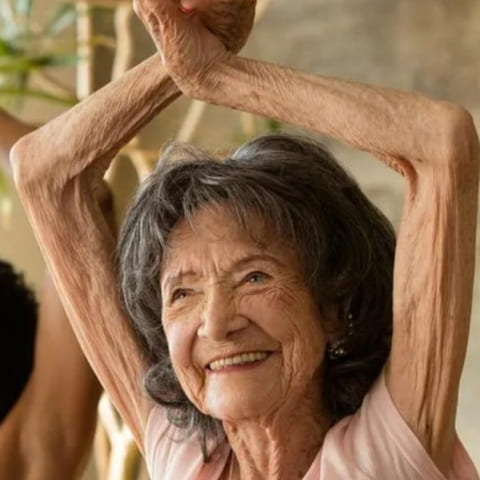

„Vidio sam ih u tijelima ljudi koji nisu ni slutili da ih nose”
„Godinama su živjeli u meni, a ja sam krivila godine i umor.” Patolog s 34 godine prakse govori istinu koju nitko ne želi čuti: paraziti nagrizaju tijelo u tišini, a prvi uzrok gotovo se nikada ne traži. Priča o ženi koja se spasila na vrijeme.
Šest godina Anka Vuković — umirovljena učiteljica iz sela pod Velebitom — zapisivala je u običnu bilježnicu sve dijagnoze koje je dobila. Jedanaest, ispisanih kemijskom, jedna ispod druge. Nijedna točna. Njezina je priča došla do čovjeka koji je trideset i četiri godine vlastitim očima gledao što ljudi nose u sebi — i koji danas govori ono što nitko ne piše na nalazu.

U Sinac smo se popeli u četvrtak, oko podneva. Put do Ankine kuće prolazi pokraj crkve, a onda skreće uzbrdo, na šljunčani puteljak koji auto svladava u prvoj brzini. Na vratima nas je čekala s bilježnicom u ruci, kao da je osobna iskaznica.
Ima 59 godina. Trideset i jednu provela je za katedrom, u seoskoj školi, u nižim razredima. Žena koja zapisuje. Koja vodi evidenciju. Baš zato je, kad joj je počelo biti loše, učinila jedino što joj se činilo logičnim: kupila je bilježnicu i u nju upisala svaki pregled, svaku dijagnozu, svaki lijek.
„Mislila sam da tako pomažem”, kaže. „Da će netko, kad je sve zapisano, uhvatiti nit. Nitko ništa nije uhvatio. A sad je ta bilježnica dokaz da mi je šest godina života otišlo uzalud.”
- Kronični gastritis
- Sindrom iritabilnog crijeva
- Anemija zbog nedostatka željeza
- Alergijski kontaktni dermatitis
- Gastroezofagealni refluks
- Sindrom kroničnog umora
- Anksiozni poremećaj
- Nepodnošljivost glutena (nepotvrđena)
- Crijevna disbioza
- Nesanica u menopauzi
- „Ništa patološko — to su godine”
„Zadnja je bila najbolnija. Mladi doktor, dobar čovjek, prelistao je bilježnicu, vratio mi papire i blago rekao: «Gospođo učiteljice, to su godine. Morate se naviknuti.» Imala sam 57. Ja, koja sam s 50 uz ovaj brijeg nosila dvije vreće na leđima.”
Anka Vuković, 59 godina, Sinac„Najgore je što su mi nalazi bili dobri. Svi. Krv «unutar referentnih vrijednosti». Pa zašto sam se onda osjećala kao da se netko hrani iz mene? Došla sam dotle da mislim da umišljam. Da malo ludim.”
Anka Vuković, 59 godina, SinacČovjek koji je 34 godine gledao ono što su drugi dobivali samo na papiru
Razgovor s dr. Zvonimirom Brkićem, patologom, 34 godine prakse i preko 9 000 obdukcija

— Ja nisam bio liječnik u ordinaciji. Ja sam stajao u prostoriji bez prozora, u podrumu bolnice, i otvarao ljude svih dobi. Trideset i četiri godine. Preko devet tisuća. Ljude koje nikada nisam vidio žive i o kojima sam na kraju znao više nego njihove obitelji.
Reći ću vam jednostavno, bez učenih riječi. Kad presiječeš crijevo, ono mora imati određenu boju — živu, ružičastu, čistu. Kod mnogih na mome stolu stijenka je bila prekrivena gustom sivom skramom, kao da je iznutra namazana voskom. Ispod te skrame, uraslih u samu stijenku, bili su oni. Nisu uvijek veliki crvi, kakve pokazuju po internetu — češće sitni, u kolonijama, zajedno s ličinkama. Da bih došao do onoga što mi je trebalo, svaki put sam skramu rezao skalpelom.
Dr. Brkić govori polako, s dugim stankama, kao čovjek naviknut da ne žuri. Umirovio se prije nekoliko godina. Živi u Gospiću, u zgradi pokraj bolnice u kojoj je radio. Na stolu mu stoji fascikl s kartonskim koricama — sačuvao je, kaže, „nekoliko stvari od kojih se nisam mogao rastati”.
„Ljudi misle da su paraziti nešto od nekada. Iz siromaštva. Iz drugih zemalja. To je zabluda koja košta godine života. Ovdje su, kod nas, u najobičnijim stvarima: u mesu s kolinja, ako nije dovoljno stajalo na vatri; u neopranom zelenju iz vrta; u zemlji pod noktima; u vodi iz bunara; na rukama, nakon što si psa počešao iza uha. I jednom kad uđu, mogu godinama ostati u tijelu, množiti se i polako ga trovati — dok si čovjek govori da je gastritis, alergija ili jednostavno umor.”
Fascikl koji nije mogao baciti
— Zvao se Ivica Tomljanović. Pedeset i devet godina. Četrnaest godina radio je na gradilištima u Njemačkoj i vratio se kući, u Brinje, da si sagradi kuću. Nikada ga nisam vidio živog. Vidio sam samo njegov fascikl — i njega.
U dvije godine tri je puta dao nalaze. Tri puta su mu izašli čisti. Zadnji put je njegov liječnik na uputnici napisao: „izražena astenija, gubitak tjelesne mase, bez utvrdivog uzroka”. Odnosno: čovjek kopni, a ne znamo zašto.
Došao je na moj stol jednog utorka. Moždani udar, s 59 godina. A u njegovim crijevima bilo je točno ono što ondje nije imalo što tražiti — pod istom sivom skramom.
— Ne kažem da su ga paraziti ubili. To ne mogu reći i nikada neću. Kažem nešto drugo: nitko nije tražio dalje, jer je imao tri papira koji su tvrdili da nema ničega. Tako se kod nas gube ljudi. Ne iz zlobe. Zbog papira koji djeluju umirujuće.
Zato sam pristao govoriti. Otišao sam u mirovinu i rekao si da imam pravo šutjeti. Ali nemam.
Zašto papir šuti: tri stvari koje vam nitko ne objašnjava
Kako je moguće imati besprijekorne nalaze i tijelo koje gasne

— To sam pitanje čuo tisuću puta: „Doktore, ali ja svake godine vadim nalaze i sve mi je uredno.” Objasnit ću vam zašto to ne znači bogzna što.
- U krvi ih nemaObična krvna slika ih ne pokazuje — i to ne zato što je laboratorij loš, nego zato što ih u krvi nema. Sjede u stijenci crijeva. Krv pokazuje najviše njihovu sjenu: malo snižen hemoglobin, koji onda godinama liječiš tabletama željeza.
- Nalaz stolice se ne radi jednomJedina pretraga koja bi ih mogla uhvatiti laže ako je napraviš samo jednom. Jajašca ne izlaze svaki dan, nego u ciklusima. Padne li uzorak na „prazan” dan, nalaz izađe čist. Za tjedan dana može opet izaći čist. Da bi nešto značio, ponavlja se tri-četiri puta, u razmaku od nekoliko dana.
- Nitko je ne traži tri putaTu je čvor. U šest godina obilaženja liječnika Anki Vuković nije propisana nijedna. Nijedna jedina. Ivici Tomljanoviću su napravljene tri — ali po jedna godišnje, što je isto kao da nije napravljena nijedna.
Umor koji ne prolazi, nadutost, svrbež kože, „alergije” i „živci” nakon 40. godine nisu uvijek „od godina”. Vrlo često su znak tijela koje na leđima nosi živi teret.
Tablete za „gastritis” i za „alergiju” prikrivaju simptom, dok se uzrok mirno nastavlja množiti. Bez potpunog čišćenja tijelo slabi iz godine u godinu — a problem se iz crijeva penje prema jetri i žuči.
„Tableta iz ljekarne pogađa jednu vrstu. A u čovjeku ih živi na desetke”
Zašto uobičajeno liječenje gotovo uvijek podbaci — i što ono zapravo radi jetri
— Druga zabluda, jednako skupa kao prva: da je dovoljno progutati tabletu i gotovo. U čovjekovu tijelu živi na desetke vrsta — jedne u crijevima, druge u jetri, treće u žučnim vodovima, četvrte u mišićima. Tableta iz ljekarne pogodi najviše jednu ili dvije. Ostale ostaju, množe se, nastavljaju.
Evo kruga iz kojeg ljudi više ne izlaze: popiješ tabletu, nekoliko tjedana ti je bolje, a onda se vrate umor, nadutost, koža — i kažeš si „nisu to oni, pa uzeo sam lijek”. Zapravo si pogodio tek dio problema. I povrh svega, jaka kemija iz tih tableta udara upravo jetru i bubrege — dakle baš one organe koji su već nosili najveći teret.

„Sedam godina liječila sam se od «alergije». Kreme, tablete, kapi, dva dermatologa. Ruke su mi gorjele i noću sam se grebla dok nisam ostavljala tragove. Nitko, ama baš nitko, nije spomenuo tu riječ.”
Anka Vuković, 59 godina, Sinac„Mene su pet godina držali na gastritisu. Težina nakon svakog obroka, mučnina, trbuh napuhan kao bubanj. Progutao sam sve što su mi dali. Uzalud. I mršavio sam, iako sam jeo kao normalan čovjek. Pet godina i hrpa novca za dijagnozu koja nije bila moja.”
Ilija Pavičić, 63 godine, bivši šumski radnik iz KrasnaSlučajevi koji su promijenili moj pogled — i promijenit će način na koji gledate vlastito zdravlje
— Dopustite da vam kažem što mi je prolazilo kroz očevidnik godinu za godinom. Ne brojke. Ne statistiku. Ljude. Ljude s imenima, koji su do zadnjeg dana vjerovali da im je problem nešto sasvim drugo.

„Bila sam stalno umorna, blijeda, iscijeđena. Liječnici su govorili: «manjak željeza, uzimajte tablete». Uzimala sam ih godinama. Ništa. Nitko nije pitao ne uzima li možda netko drugi to željezo iz mene. A uzimao je.”
iz slučajeva o kojima govori dr. Brkić
„Mršavio sam, a jeo sam normalno. Žena se šalila da imam «brz metabolizam». Nije bilo smiješno. Nešto je jelo umjesto mene, iz mene. Shvatio sam prekasno da bi mi koristilo — ali vi, koji ovo čitate, još niste ondje.”
iz slučajeva o kojima govori dr. BrkićZnakovi koje svi pripisuju godinama
Dr. Brkić kaže: prepoznate li se u tri ili više njih, vrijedi si postaviti pitanje — bez obzira na to što piše na posljednjim nalazima
- Umor koji ne prolazi — spavate osam sati, a budite se kao nakon dana košnje;
- Nadutost, plinovi, težina nakon jela — „kao da nešto vrije u trbuhu”;
- Zatvor i proljev koji se izmjenjuju bez razloga;
- Svrbež, osipi, ekcemi, „alergije” koje dolaze i odlaze niotkuda;
- Neodoljiva želja za slatkim i tjesteninom koju ne možete obuzdati;
- Škripanje zubima u snu, nemiran san, buđenja oko tri ujutro;
- Anemija i manjak željeza koji se ne rješavaju ni tabletama;
- Podočnjaci, koža bez boje, lomljiva kosa i nokti;
- Svrbež u analnom području, osobito noću;
- Razdražljivost, „živci”, magla u glavi, slabo pamćenje;
- Česte prehlade i infekcije — tijelo koje se više nema čime braniti.
Svaki se od njih lako pripiše nečem drugom. Baš zato godinama ostaju neotkriveni.
Svaki dan s tim teretom u tijelu još je jedan dan trovanja. Tisuće ljudi godinama liječe pogrešnu stvar, dok pravi uzrok radi nesmetano. Ne odgađajte više — ni zbog sebe, ni zbog svojih bližnjih.
— Ja sam cijeli život gledao posljedice. Ali rješenje nije došlo iz obdukcijske dvorane. Došlo je iz jednog tora. Od čovjeka bez ijedne liječničke diplome, koji već pedeset godina ispravno radi jednu stvar koju mi, ljudi, nikada ne radimo sami sebi.
Kalendar na vratima staje
Mate Rukavina, 74 godine, bivši veterinarski tehničar na državnom dobru, danas ovčar u Krasnu
— Školu za veterinarske tehničare završio sam u Križevcima i dvadeset i dvije godine radio na državnom dobru. Kad su ga ugasili, ostao sam sa svojim ovcama. Osamdeset grla, dva psa i mačka koja nikad ne miruje u kući.
Na vrata staje zakucao sam kalendar. Ondje kemijskom olovkom bilježim kad razgonim nametnike. Ovce — u proljeće i u jesen. Psi — četiri puta godišnje, jer trče po šumi. Mačka — dvaput. Dođe unuk iz Gospića i smije mi se, kaže da sam stroži nego u bolnici.
— Imao sam tada nekih šezdeset godina. I postavio sam si jednostavno pitanje, kako bi ga postavio priprost čovjek: ja jedem njihovo meso, pijem iz istog bunara, kopam istu zemlju, spavam sa psima kraj nogu — a mene tko upisuje u kalendar? Nitko. Nikada. Ni kao dijete, ni u vojsci, ni na dobru. Šezdeset godina — nitko.
Životinja u mome dvorištu bila je bolje čuvana od mene. To je sram kojega se nisam mogao otresti.
— Na dobru sam za životinje pripremao biljnu mješavinu. Morala je biti biljna i blaga — jaku kemiju nisam smio, jer to mlijeko i meso završe na ljudskom stolu. Recept sam znao od jednog starca iz Brinja, koji ga je držao od svoga oca.
I primijetio sam nešto čemu isprva nisam pridao važnost: pastiri koji su pili čaj od iste mješavine — pili su ga zbog „težine u želucu”, jer hrana na stanu je kakva jest — prestajali su se žaliti. Na umor. Na kožu. Na trbuh. Jedan od njih, Jure, rekao mi je jedne jeseni: „Šjor Mate, otkad pijem tu tvoju gorku vodu, spavam kao dijete.” Tad sam se ozbiljno zamislio.
Biljna mješavina koju je koristio Mate Rukavina sadrži:
- Pelin (Artemisia absinthium)Najpoznatiji biljni lijek za izgon parazita iz crijeva.
- Vratič (Tanacetum vulgare)Snažno djeluje na crijevne parazite i na njihova jajašca.
- Klinčić (eugenol)Razgrađuje jajašca i ličinke — upravo ono do čega druge biljke ne dopiru.
- Crni orah (Juglans nigra)Ekstrakt iz ljuske: čisti crijevo i pomaže izbacivanju.
- Bučine sjemenke (Cucurbita)Djeluju blago i smiruju crijevnu sluznicu.
Te se biljke teško slažu međusobno. Ako omjer nije točan, čaj pogodi samo jednu vrstu — dakle točno koliko i tableta iz ljekarne — a ostale ostanu. Tajna je u tome što djeluje na više njih odjednom: i na odrasle, i na jajašca, i na ličinke.
Tako se rodio Parazol — čaj koji čisti potpuno, ali blago
— Mješavinu sa stana odnio sam ženi koja se razumije u bilje i prilagodili smo je čovjeku: iste biljke, drugi omjer, oblik čaja, koji je tijelu prirodan. Zove se Parazol. Priprema se kao svaki čaj: žličica se prelije vrućom vodom, ostavi da odstoji i pije ujutro i navečer, dok traje kura. Bez tableta, bez jake kemije — biljke rade svoj posao kroz crijevo, dakle točno ondje gdje oni i jesu.

Snaga je u tome što čaj djeluje redom i do kraja: najprije na odrasle, zatim na jajašca i ličinke, potom pomaže tijelu da sve izbaci van i da se crijevo oporavi. Tableta pogađa jednu jedinu metu. Čaj prolazi kroz cijeli probavni trakt — cijelim putem na kojem oni doista jesu.
Svaka biljka, u svom omjeru, hvata drugu fazu: odraslog, jajašce, ličinku. Zato čisti potpuno, a ne napola. I, najvažnije, čini to blago — bez napada na jetru i bubrege kakav rade jake tablete. Prvi su ga pili pastiri na stanu. Zatim ljudi iz sela, sa svim onim tegobama „bez rješenja”.
— Mate je drugi bratić mome mužu. Došao je na karmine, vidio kako izgledam i rekao mi, bez okolišanja: «Anka, imaš lice moje matere prije nego se očistila. Uzmi i pij ovo tri tjedna.» Naljutila sam se na njega, da vam pravo kažem. Uzela sam vrećicu više da ga se riješim. Treći dan sam osjetila da me trbuh ne pritišće kako me pritiskao godinama. Pripisala sam to slučajnosti. Tek kasnije, kad mi je objasnio dr. Brkić, shvatila sam što se zapravo dogodilo.
Četiri koraka kojima Parazol čisti organizam
Što se, redom, događa u vašem tijelu
- Izgon odraslihVeć u prvim danima kure pelin i vratič djeluju na odrasle parazite u crijevu — slabe ih i pomažu tijelu da ih izbaci prirodnim putem. Ne jednu vrstu, kako to čini tableta, nego više njih odjednom.
- Uništavanje jajašaca i ličinkiKlinčić (eugenol) razgrađuje jajašca i ličinke — upravo ono do čega druge biljke ne dopiru. Taj je korak ključan: bez njega sve kreće ispočetka iz preostalih jajašaca. Zato kura čisti potpuno, a ne djelomično.
- Izbacivanje otpada iz tijelaDok odlaze, organizam se čisti od otpadnih tvari koje su godinama izlijevali u krv. Crni orah i bučine sjemenke pomažu jetri i crijevima izbaciti nakupljeno — nestaju umor, nadutost i magla u glavi.
- Oporavak crijeva i obraneNakon čišćenja mješavina smiruje crijevnu sluznicu i pušta tijelo da obnovi zalihe. Vraća se energija, smiruje se koža, probava dolazi u red, a imunitet — godinama otupljivan u gluhoj borbi — ponovno jača.
„Bio sam skeptik. Rezultati mi nisu dali da to i ostanem”
Promatranje na 2 340 osoba u dobi od 45 do 86 godina
— Kad sam prvi put čuo za biljni čaj, nasmiješio sam se. Trideset i četiri godine za obdukcijskim stolom nauče te da ne vjeruješ u priče. Ali ono što su pokazivali ljudi koji su ga pili bilo je prejasno da bih zatvorio oči. Skupina stručnjaka proširila je promatranje na više od 2 300 ljudi iz cijele zemlje — s upravo onim simptomima koje gotovo nitko nije povezivao s ovim.
Vidio sam ljude godinama držane na „gastritisu” i na „alergiji” kako u nekoliko tjedana vraćaju energiju, kako im se smiruje koža, kako im probava dolazi u red. Ono što nijedna tableta nije riješila godinama.
Rezultati promatranja „Parazol”
Kontrolna skupina: 2 340 osoba, 45–86 godina
Što danas piše u bilježnici Anke Vuković
Šest godina liječena od „gastritisa”, „iritabilnog crijeva” i „kroničnog umora”. Nakon kure s čajem Parazol — prvi put nakon godina probudila se odmorna, a koža joj se smirila.
Anka je bila među prvima kojima je Mate dao mješavinu. S 59 godina, nakon šest godina obilaženja liječnika, s besprijekornim nalazima i tijelom koje je kopnjelo. Kći joj je u Irskoj, sin radi u Njemačkoj. Zvali su nedjeljom, slali novac za blagdane — i nisu primjećivali ništa, jer su i oni mislili da je „umor i godine”.

„Šest sam se godina vukla od liječnika do liječnika. Stalno umorna, naduta, koža me pekla, kosa mi je ostajala u češlju u pramenovima. Govorili su mi: gastritis, iritabilno crijevo, živci, godine. Pila sam sve što su mi davali. Ništa. A ja sam se osjećala kao da se netko hrani iz mene.
Najteže je bilo to što su svi papiri izlazili dobri. Došla sam dotle da me bilo sram ići u ordinaciju. Govorila sam si da pretjerujem, da sam žena koja se žali.
Pila sam čaj tri tjedna, ujutro i navečer, kao onu gorku vodu od Mate. Trećeg mi je dana laknulo u trbuhu. Nakon tjedan dana probudila sam se odmorna — prvi put ne znam otkad. Nakon tri tjedna smirila mi se koža na rukama, prvi put u sedam godina. A nakon otprilike mjesec dana uhvatila sam se kako se penjem uzbrdo do crkve, a da ne stanem na pola puta.
Plakala sam. Ne od sreće. Od jada. Šest godina i hrpa novca, jer nitko nije pogledao ondje gdje je trebalo. Otvorila sam bilježnicu, na zadnju stranicu napisala «Nisu bile godine» i spremila je u ladicu.”
Anka Vuković, 59 godina, Sinac kraj OtočcaDrugi čovjek s kojim smo razgovarali bio je Ilija Pavičić, 63 godine, bivši šumski radnik iz Krasna, pet godina držan na terapiji za gastritis koji nije prolazio ni od čega.

„Dvadeset i osam godina bio sam u šumi. Mislio sam da mi otud sve dolazi. Težina nakon svakog obroka, mučnina, trbuh napuhan kao bubanj. Vukli su me po pretragama, davali tablete za želudac. Ništa. I mršavio sam, iako sam jeo normalno — žena je u šali govorila da imam metabolizam mladića. Nije bilo smiješno.
Susjed mi je rekao za taj čaj. Uzeo sam ga više da ga maknem iz kuće. Nakon nekih deset dana ručao sam i ustao od stola, a da me ništa nije pritiskalo. Ostao sam stajati u kuhinji i pomislio: to je bilo sve? Toliko je trebalo?
Najviše me boli što sam izgubio pet godina. Pet godina u kojima sam odbijao ići na svadbu, na krštenje, bilo gdje gdje se jede, da se ne osramotim.”
Ilija Pavičić, 63 godine, Krasno„Ne prikriva simptom. Izvlači uzrok van”
Ne dobivaju samo teški slučajevi. Svatko tko je prešao 40 i osjeća prve znakove može ovu priču skratiti za godine.
— Kura obično traje tri do četiri tjedna, a kod onih koji problem nose dugo može i dulje. Jedna kura, odrađena do kraja, dovoljna je — to nije nešto što se pije stalno. Neki je kasnije ponove jednom godišnje, preventivno, baš kako se radi kod životinja, jer se sve može ponovno unijeti hranom ili vodom. Ali to je već izbor, a ne obveza.
Stvari dolaze redom: prvih dana nestaju nadutost i težina, zatim se vraća energija, zatim se smiruje koža, zatim probava dolazi u red. Tijelo samo zna što mu je činiti, čim mu skineš teret s leđa.
Zahvaljujući mješavini Mate Rukavine, tisuće ljudi u Hrvatskoj odradile su kuru do kraja. Nekoliko slučajeva:

Muškarac, 65 godina, Slavonski Brod. Godine „gastritisa” i kroničnog umora. Nakon kure: nadutost je nestala, energija se vratila, probava se normalizirala.

Žena, 58 godina, Karlovac. „Alergija” i osipi po koži godinama. Nakon kure: koža čista, svrbež prestao, reakcije su stale.

Žena, 72 godine, Vinkovci. Anemija koja se nije rješavala ni željezom. Nakon kure: nalazi su se poboljšali, umor i bljedoća nestali.

Muškarac, 70 godina, Šibenik. Stalna nadutost, nesanica, škripanje zubima. Nakon kure: miran san, uredna stolica, vraćena težina.
— Ja sam cijeli život gledao što ostaje iza njih. Zato me ovi slučajevi diraju: čim se teret skine, tijelo se samo digne. Bez jake kemije. Bez tableta koje udaraju jetru. Ljudsko je tijelo snažno — treba mu samo na vrijeme maknuti ono što ga izjeda.
De ce nu-l găsiți în farmacii? Și cum se poate ajunge la el
Producția este lentă și migăloasă. Cum îmi explica badea Toader, plantele trebuie culese la momentul lor și potrivite în proporția exactă. Totul se face în cantități mici, cu mâna, și nu poate acoperi cererea.
Ar trebui cel puțin 2–3 ani ca Parazol să intre în farmacii. Până atunci se distribuie doar online, în cadrul unui program de sprijin, iar reducerea poate ajunge la 50% — ceea ce, pentru un pensionar, chiar contează.
Vă rog: nu ratați programul. Nu doar pentru dumneavoastră — ci și pentru cei de lângă dumneavoastră, care poate tratează de ani de zile lucrul greșit, fără să bănuiască nimic. Curățați-vă pe dumneavoastră și ajutați-i pe ai dumneavoastră.
Pentru comandă, folosiți formularul de mai jos.
Ultima ocazie din acest an
Pentru dumneavoastră sau pentru cineva apropiat care suferă de ani, fără răspunsul corect

Sunt rezervate 20 000 de pachete exclusiv pentru cititorii acestei publicații. Fiecare cetățean al României de peste 40 de ani poate primi o reducere de până la 50%, iar programul ține până la .
Nu așteptați până când oboseala, pielea și burta devin parte din fiecare zi. Până când mai dați o dată bani pe un diagnostic care nu e al dumneavoastră. Amintiți-vă de calendarul de pe ușa grajdului: animalele le trecem pe el de două ori pe an, iar pe noi — niciodată. O cură, dusă până la capăt. Dacă o veți repeta cândva preventiv, e alegerea dumneavoastră.
Introduceți numele și numărul de telefon. Un consultant vă va suna, va alege programul potrivit și va organiza livrarea prin curier sau prin poștă în 2–3 zile, direct la adresa dumneavoastră.
Locul dumneavoastră este rezervatNr. 19 974

Pentru a beneficia de reducerea de 50%, introduceți numele și numărul de telefon în câmpurile de mai jos, apoi apăsați butonul „COMANDĂ”.
- Livrare prin curier, la adresa indicată de dumneavoastră
- Plata la primire — nu plătiți nimic în avans
- Pe cutie nu scrie nimic — ambalaj discret

Comentarii
Cititorii publicației · ordonate după cele mai recente

Am plâns la caietul acela. Mama are 74 de ani și are și ea un carnet în care își scrie pastilele. De patru ani o plimbă cu „colon iritabil”. Nimeni, dar absolut nimeni, nu i-a cerut analiza aia de trei ori. I-am comandat azi. Cum de nu m-am gândit mai devreme.

Îl beau de 12 zile, dimineața și seara. Balonarea care mă chinuia de trei ani a dispărut. Ieri mi-am încheiat o fustă care stătea în dulap de anul trecut. Atât.

Am 69 de ani. Șapte ani de „alergie” — creme, pastile, picături, doi dermatologi. Mă ardeau brațele și mă scărpinam noaptea până lăsam urme. Trei săptămâni cu ceaiul și pielea s-a liniștit. Șapte ani, iar răspunsul era altul. Nu pot să vă spun ce ciudă îmi e.

Sunt șofer, stau 10 ore pe zi la volan. Oboseală, ceață în cap și o poftă de dulce pe care n-o puteam opri — mâncam napolitane la fiecare benzinărie. Ziceam că-s anii și drumul. Săptămâna a patra: am condus până la Oradea fără să mă lupt cu somnul.

„Animalele le trecem pe calendar de două ori pe an, iar pe noi niciodată.” Am citit propoziția asta de trei ori. Am și eu un calendar pe ușa grajdului, cu oile și cu câinii pe el. Am comandat pentru mine, pentru nevastă și pentru socru. Rușine mi-a fost, nu alta.

Mă gândesc să comand pentru tata. Are 78 de ani, de ani de zile se plânge de digestie și de oboseală, iar doctorii nu găsesc nimic. Nu e prea târziu la vârsta asta? Nu vreau să-i dau speranțe degeaba.

Daniela, mama mea are 82 de ani. Exact la fel: oboseală, balonare, analize „bune”. A dus cura până la capăt. Acum mănâncă normal, doarme noaptea și a început iar să iasă la poartă la vecine. Nu exagerez cu nimic. Comandă-i, tatăl dumitale merită o șansă.

Daniela, comandă liniștită. Eu am 78 de ani și exact asta aveam — nimeni nu știa ce e cu mine. O lună, și m-am pus pe picioare. La vârsta asta fiecare lună contează, nu mai amâna.

Eu n-am nici câine, nici pisică, stau singură la bloc, la etajul patru. Mă întrebam dacă mă privește pe mine povestea asta. Apoi mi-am adus aminte că mănânc legume de la piață, de la țară, și carne de la tăiere, de la cumnatu-meu. M-am lămurit singură. Am comandat.

La 68 de ani credeam că e normal să fii obosită tot timpul. Anul ăsta am săpat singură toată grădina, primăvara, și nu m-am întins pe pat după. De zece ani nu mai făcusem asta.
Am 82 de ani. Anul trecut abia mă mișcam prin casă — oboseală, digestie proastă și prindeam fiecare răceală care trecea prin sat. Am făcut cura. Nu spun că am întinerit. Spun că iar ies la poartă și iar mă duc singur la biserică.

Nevastă-mea se chinuie de ani de zile — piele, oboseală, „nervi”. Îmi era frică să nu fie ceva mai rău și amânam să mergem la investigații, ca proștii. Am comandat două pachete. Măcar începem de undeva.

Citesc și mă gândesc la soacra mea, care s-a dus acum patru ani. Exact așa a fost: slăbea, era obosită, analizele ieșeau bune și toți ziceam că-s anii. Poate mă înșel. Dar nu mai vreau să mă înșel a doua oară, cu mama.

Curierul mi l-a adus în două zile, am plătit la ușă. Pe cutie chiar nu scrie nimic — mie asta mi-a contat, că stau la bloc și nu vreau discuții pe scară. Sunt la a doua săptămână.

Am întrebat la două farmacii — nu au și nici nu comandă. Una dintre farmaciste s-a uitat cam ciudat la mine când am spus de unde știu. Am comandat de aici. Soacra are 81 de ani și de ani de zile o ținem pe pastile de stomac degeaba.